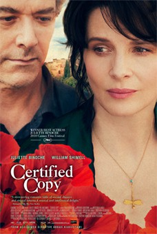

#7333 Die Liebesfälscher
Alternativ: Certified Copy (Englischer Titel)
 
 IMDB-Wertung: 7.3 / 10
IMDB-Wertung: 7.3 / 10  Metascore: 0
Metascore: 0 
James Miller has just written a book on the value of a copy versus the original work of art. At a book reading, a woman gives him her address, and the next day they meet and take a country-side drive to a local Italian village. Here, they discuss various works of art found in the town, and also the nature of their relationship - which gets both more revealed and concealed as the day progresses.
Jahr: 2010
Dauer: 106 Minuten
FSK: 0
Land: Frankreich Studio: Alamode FilmTonspuren: DTS - ,
Untertitel: Deutsch,
Auflösung: 1080p (1920x1040) Größe: 5488 MB
Genre: Drama
Regisseur: Abbas Kiarostami
Drehbuch: Caroline Eliacheff
Soundtrack:
Darsteller:
 Juliette Binoche als Elle
Juliette Binoche als Elle- William Shimell als James Miller
- Jean-Claude Carrière als L'homme de la place
- Agathe Natanson als La femme de la place
- Gianna Giachetti als La patronne du café
- Adrian Moore als Le fils
- Angelo Barbagallo als Le traducteur
- Andrea Laurenzi als Le guide
- Filippo Trojano als Le marié
Datei: X:\2010(G-M)\Liebesfälscher, Die (2010, FSK0, 1920x1040).mkv seit 16.10.2017
Festplatte: HD 2010(G-Z)-2011(A-F)
 Es gibt insgesamt 85 Filme in der Gruppe '2010(G-M)'
Es gibt insgesamt 85 Filme in der Gruppe '2010(G-M)'